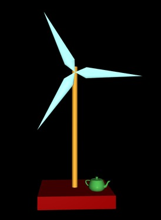

CS 424: Computer Graphics, Fall 2021
Lab 13: gl-matrix
This is, I hope, a genuinely short lab that you should be able to complete in the lab period.
You will need a copy of /classes/cs424/lab13-files, or at least copies of the four files that it contains. The folder includes a copy of the JavaScript library gl-matrix.js, which we have discussed in class. In this lab, you will use that library to manipulate a modelview matrix. There is also a copy of basic-object-models-IFS.js, which is used to create the basic objects that are used in the program. You will work on the file lab13.html.
This lab is due at our next lab period, on Tuesday, December 2. For the final lab, on that day, you will work on a program in class and will get credit for showing up and getting the program at least partly working.
A short written progress report on your final project is due in class on Monday, November 22. You then need to meet with me at least once in the period November 29 to December 6 to discuss the project and presentation. And remember that the final project itself is due at the scheduled file exam period, Thursday, December 7, 7:00 PM to 10:00 PM. You will also give your final project presentation at that time.
The project
 The original lab13.html shows a tiny box that can be rotated by dragging your mouse on the canvas. Your assignment is to replace the box with a large windmill sitting on a rectangular base, as shown in the picture at the right. The vanes of the windmill should rotate when animation is turned on. Each vane of the windmill should be constructed from two cones, as we have done in examples in the past. For full credit, add the teapot to the base of the windmill, as shown. (See teapot-model-IFS.js.)
The program includes three instance variables representing basic objects: box, cone, and cylinder. These variables have instance methods box.render(), cone.render(), and cylinder.render() that can be called to draw the objects. The untransformed objects are of size 1 in all three directions, and they have their centers at (0,0,0). The axis of the cone and the axis of the cylinder are aligned along the z-axis. All objects in the scene should be transformed versions of the three basic objects or of a basic teapot object.
By the way, this is procedural graphics, not scene graph based. You will probably want to write functions to draw some of the complex objects.